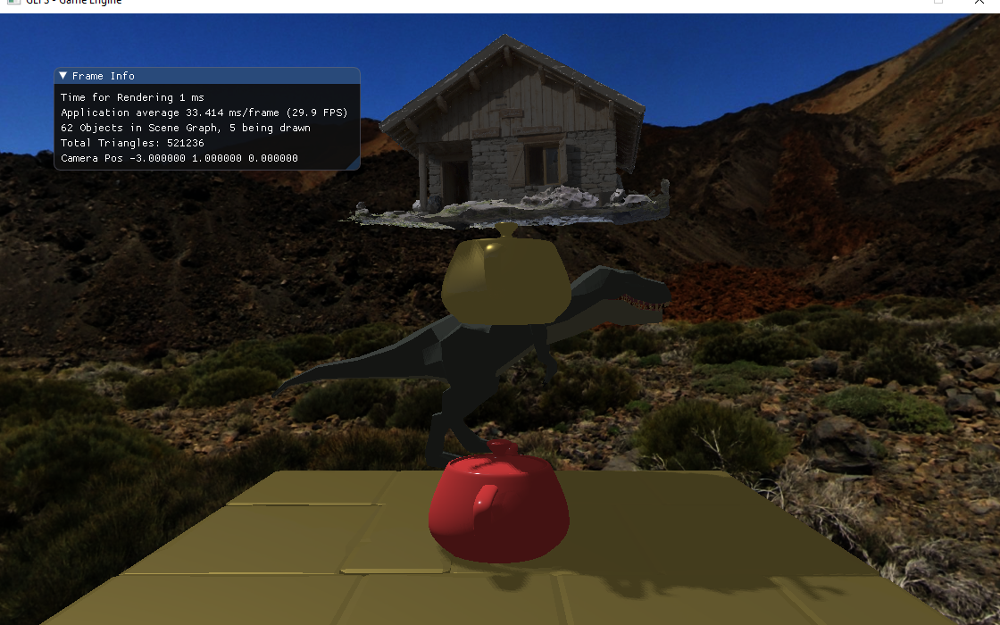
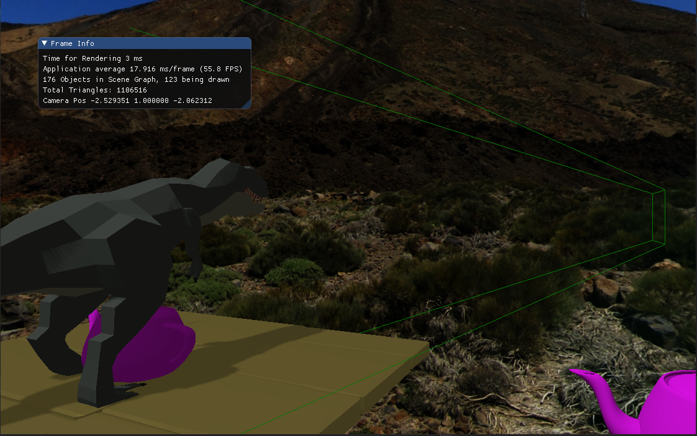
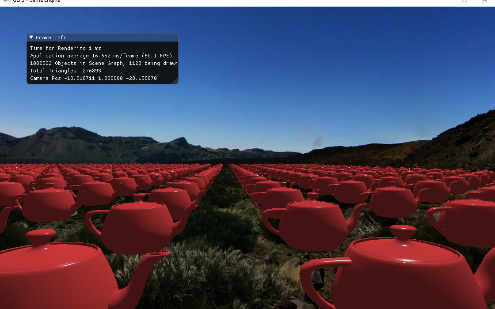
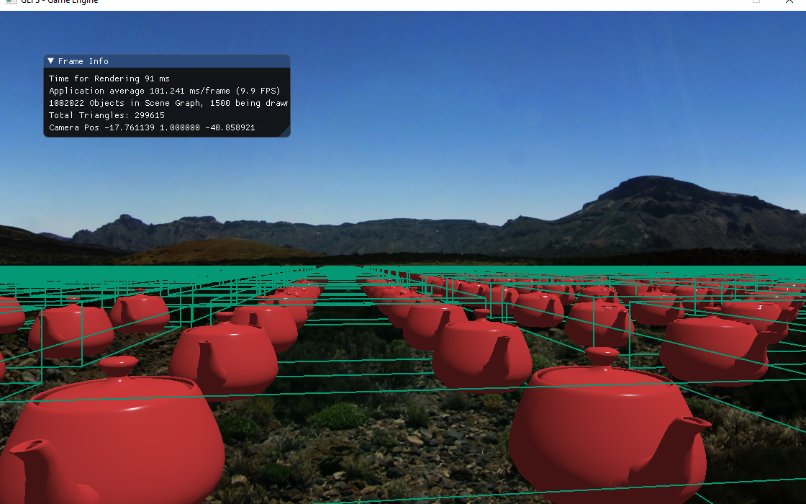

View Frustum Culling and Level of Detail
Partner: Zach Chavis
Description
The goal of this project was to take an existing game engine (the professors) and make it capable of rendering very large scenes. The code we started with rendered 10,000 teapots at 2FPS on my laptop. To speed this up we implemented two key things, which are described below.
View Frustum Culling
The first thing we did was implement view frustum culling. We did this by calculating the axis aligned bounding box (AABB) for each model at startup. Each frame, we would then update each AABB if its object moved or rotated, and then test then against the 6 frustum planes to see which ones were inside the frustum. This worked well, but in order to make it faster we added the concept of static vs dynamic game objects to the engine. Knowing an object is static means that we can calculate its world AABB once, and reuse it every frame. This meant that we could calculate a bounding volume hierarchy (BVH) once, and reuse it every frame for the static objects. This dramatically reduced the culling time for scenes with many static objects, and allowed us to get 1,000,000 teapots at 40FPS on my laptop.
Level of Detail
In order to improve the rendering time of the objects that are visible, we made a very simple level of a detail system. This is a process of drawing lower quality versions of models when they are further away from the camera since the further an object is, the harder it is to notice detail in it. We made an executable that would take in an OBJ, and use the meshoptimizer to produce a decimated models. This would then be serialized for fast loading at the startup of the engine. This was nice because we did not have to manually generate lower quality meshes in Blender or something similar. The downside is that the output of the algorithm we used is pretty bad, especially at preserving the texture coordinates of a model. This makes the change in LOD levels pretty noticeable. We also used a very simple distance check to figure out which LOD to display, but a more sophisticated method could be used that takes into account the objects size and inherit detail. Still though, for a slightly lower quality scene, this boosted our FPS from 40 to 60+ since only a tenth of the triangles had to be drawn in total.
Code
Link to GithubControls
- Left and Right Arrow Keys: Turn the camera left and right
- Up and Down Arrow Keyss: Move the camera forward and backword
- D: Enter / exit debug camera mode
- B: While in debug mode, toggles drawing the camera frustum and object AABBs
- Scroll Wheel: While in debug mode this shows different levels of the BVH tree
Tools Used
- Stephen Guy's game engine (which uses SDL2, OpenGL, glad, glm, loguru, and Lua)
- Meshoptimizer for mesh LOD generation and optimization
Videos
Images:
The original starting image

Adding the 500,000 triangle Chalet from the serialized format

Adding the debug camera

10,000 teapots before implementing culling or LOD

1,000,000 teapots with the BVH culling and LOD system at 60+ FPS

Visualizing one of the levels in the BVH tree